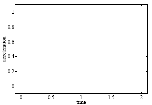

Optimal control problems
Car problem
#include <iostream>
#include <time.h>
#include "../../source/opennn.h"
#include "car.h"
using namespace OpenNN;
int main(void)
{
srand((unsigned)time(NULL));
const double maximum_acceleration = 1.0;
const double maximum_deceleration = 1.0;
const double final_position = 1.0;
const double final_velocity = 0.0;
Car car;
NeuralNetwork neural_network(1, 3, 2);
neural_network.initialize_parameters_normal(0.0, 0.1);
neural_network.construct_inputs_outputs_information();
InputsOutputsInformation* inputs_outputs_information_pointer = neural_network.get_inputs_outputs_information_pointer();
inputs_outputs_information_pointer->set_input_name(0, "time");
inputs_outputs_information_pointer->set_output_name(0, "throttle_acceleration");
inputs_outputs_information_pointer->set_output_name(1, "bracking_deceleration");
neural_network.construct_scaling_layer();
ScalingLayer* scaling_layer_pointer = neural_network.get_scaling_layer_pointer();
scaling_layer_pointer->set_minimum(0, 0.0);
neural_network.set_scaling_layer_flag(false);
neural_network.construct_unscaling_layer();
UnscalingLayer* unscaling_layer_pointer = neural_network.get_unscaling_layer_pointer();
unscaling_layer_pointer->set_minimum(0, 0.0);
unscaling_layer_pointer->set_maximum(0, maximum_acceleration);
unscaling_layer_pointer->set_minimum(1, -maximum_deceleration);
unscaling_layer_pointer->set_maximum(1, 0.0);
neural_network.set_unscaling_layer_flag(true);
neural_network.construct_bounding_layer();
BoundingLayer* bounding_layer_pointer = neural_network.get_bounding_layer_pointer();
bounding_layer_pointer->set_lower_bound(0, 0.0);
bounding_layer_pointer->set_upper_bound(0, maximum_acceleration);
bounding_layer_pointer->set_lower_bound(1, -maximum_deceleration);
bounding_layer_pointer->set_upper_bound(1, 0.0);
neural_network.construct_independent_parameters();
IndependentParameters* independent_parameters_pointer = neural_network.get_independent_parameters_pointer();
independent_parameters_pointer->set_parameters_number(1);
independent_parameters_pointer->set_parameter(0, 3.1415927);
independent_parameters_pointer->set_name(0, "final_time");
independent_parameters_pointer->set_lower_bound(0, 0.0);
independent_parameters_pointer->set_bounding_flag(true);
PerformanceFunctional performance_functional(&neural_network, &car);
IndependentParametersError* independent_parameters_error = new IndependentParametersError(&neural_network);
independent_parameters_error->set_independent_parameter_error_weight(0, 1.0e-3);
performance_functional.set_objective_term_pointer(independent_parameters_error);
Vector<double> parameters = neural_network.arrange_parameters();
std::cout << independent_parameters_error->calculate_evaluation() << std::endl;
std::cout << independent_parameters_error->calculate_evaluation(parameters) << std::endl;
std::cout << independent_parameters_error->calculate_gradient() << std::endl;
FinalSolutionsError* final_solutions_error = new FinalSolutionsError(&neural_network, &car);
final_solutions_error->set_target_final_solution(0, final_position);
final_solutions_error->set_target_final_solution(1, final_velocity);
final_solutions_error->set_final_solution_error_weight(0, 1.0);
final_solutions_error->set_final_solution_error_weight(1, 1.0);
std::cout << final_solutions_error->calculate_evaluation() << std::endl;
std::cout << final_solutions_error->calculate_evaluation(parameters) << std::endl;
std::cout << final_solutions_error->calculate_gradient() << std::endl;
performance_functional.set_constraints_term_pointer(final_solutions_error);
std::cout << performance_functional.calculate_evaluation() << std::endl;
std::cout << performance_functional.calculate_evaluation(parameters) << std::endl;
std::cout << performance_functional.calculate_gradient() << std::endl;
TrainingStrategy training_strategy(&performance_functional);
training_strategy.construct_initialization_training_algorithm(TrainingStrategy::EVOLUTIONARY_ALGORITHM);
training_strategy.construct_main_training_algorithm(TrainingStrategy::GRADIENT_DESCENT);
const TrainingStrategy::Results training_strategy_results = training_strategy.perform_training();
const double final_time = neural_network.get_independent_parameters_pointer()->get_parameter(0);
car.set_final_independent_variable(final_time);
car.save("../data/car_problem/car.xml");
car.save_data(neural_network, "../data/car_problem/car_data.dat");
neural_network.save("../data/car_problem/neural_network.xml");
neural_network.save_expression("../data/car_problem/expression.txt");
neural_network.save_data("../data/car_problem/neural_network_data.dat");
performance_functional.save("../data/car_problem/performance_functional.xml");
training_strategy.save("../data/car_problem/training_strategy.xml");
training_strategy_results.save("../data/car_problem/training_strategy_results.dat");
return(0);
}

Problem parameters
Mathematical model
Neural network
Inputs-outputs information
Scaling layer
Unscaling layer
Bounding layer
Independent parameters
Performance functional
Objective term
Constraints term
Training strategy
Save results
Maximal feed rate to a fed batch fermenter
#include <iostream>
#include <time.h>
#include "../../source/opennn.h"
#include "fed_batch_fermenter.h"
using namespace OpenNN;
int main(void)
{
srand((unsigned)time(NULL));
double fermenter_volume = 200.0;
double maximum_feed_rate = 12.0;
double final_time = 54.0;
FedBatchFermenter fed_batch_fermenter;
NeuralNetwork neural_network(1, 2, 1);
neural_network.construct_inputs_outputs_information();
InputsOutputsInformation* inputs_outputs_information_pointer = neural_network.get_inputs_outputs_information_pointer();
inputs_outputs_information_pointer->set_input_name(0, "time");
inputs_outputs_information_pointer->set_output_name(0, "feed_rate");
inputs_outputs_information_pointer->set_input_units(0, "seconds");
inputs_outputs_information_pointer->set_output_units(0, "grams");
neural_network.construct_scaling_layer();
ScalingLayer* scaling_layer_pointer = neural_network.get_scaling_layer_pointer();
scaling_layer_pointer->set_minimum(0, 0.0);
scaling_layer_pointer->set_maximum(0, final_time);
neural_network.construct_unscaling_layer();
UnscalingLayer* unscaling_layer_pointer = neural_network.get_unscaling_layer_pointer();
unscaling_layer_pointer->set_minimum(0, 0.0);
unscaling_layer_pointer->set_maximum(0, maximum_feed_rate);
neural_network.construct_bounding_layer();
BoundingLayer* bounding_layer_pointer = neural_network.get_bounding_layer_pointer();
bounding_layer_pointer->set_lower_bound(0, 0.0);
bounding_layer_pointer->set_upper_bound(0, maximum_feed_rate);
neural_network.initialize_parameters_normal(0.0, 1.0e-3);
PerformanceFunctional performance_functional(&neural_network);
FinalSolutionsError* objective_term_pointer = new FinalSolutionsError(&neural_network, &fed_batch_fermenter);
objective_term_pointer->set_final_solution_error_weight(0, 0.0);
objective_term_pointer->set_final_solution_error_weight(1, 0.0);
objective_term_pointer->set_final_solution_error_weight(2, -1.0e-9);
objective_term_pointer->set_final_solution_error_weight(3, 0.0);
performance_functional.set_objective_term_pointer(objective_term_pointer);
FinalSolutionsError* constraints_term_pointer = new FinalSolutionsError(&neural_network, &fed_batch_fermenter);
constraints_term_pointer->set_target_final_solution(3, fermenter_volume);
constraints_term_pointer->set_final_solution_error_weight(0, 0.0);
constraints_term_pointer->set_final_solution_error_weight(1, 0.0);
constraints_term_pointer->set_final_solution_error_weight(2, 0.0);
constraints_term_pointer->set_final_solution_error_weight(3, 1.0e-6);
performance_functional.set_constraints_term_pointer(constraints_term_pointer);
Vector<double> parameters = neural_network.arrange_parameters();
std::cout << performance_functional.calculate_evaluation() << std::endl;
std::cout << performance_functional.calculate_evaluation(parameters) << std::endl;
std::cout << performance_functional.calculate_gradient() << std::endl;
TrainingStrategy training_strategy(&performance_functional);
training_strategy.construct_initialization_training_algorithm(TrainingStrategy::EVOLUTIONARY_ALGORITHM);
training_strategy.construct_main_training_algorithm(TrainingStrategy::QUASI_NEWTON_METHOD);
TrainingStrategy::Results training_strategy_results = training_strategy.perform_training();
fed_batch_fermenter.save("../data/fed_batch_fermenter/fed_batch_fermenter.xml");
fed_batch_fermenter.save_data(neural_network, "../data/fed_batch_fermenter_data.dat");
neural_network.save("../data/fed_batch_fermenter/neural_network.xml");
neural_network.save_expression("../data/fed_batch_fermenter/expression.txt");
neural_network.save_data("../data/fed_batch_fermenter/neural_network_data.dat");
performance_functional.save("../data/fed_batch_fermenter/performance_functional.xml");
training_strategy.save("../data/fed_batch_fermenter/training_strategy.xml");
training_strategy_results.save("../data/fed_batch_fermenter/training_strategy_results.dat");
return(0);
}

Problem parameters
Mathematical model
Neural network
Inputs-outputs information
Scaling layer
Unscaling layer
Bounding layer
Performance functional
Objective term
Constraints term
Training strategy
Initialization training algorithm
Main training algorithm
Save results